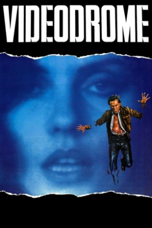

Country:Canada, 88 minutes
Spoken languages:English, Japanese
Genres:Horror, Sci-Fi, Mystery
Director(s):David Cronenberg
Writer(s):David Cronenberg
Video Codec:Unknown
Number: 2590


Certification:R
Storyline:
As the president of a trashy TV channel, Max Renn is desperate for new programming to attract viewers. When he happens upon "Videodrome," a TV show dedicated to gratuitous torture and punishment, Max sees a potential hit and broadcasts the show on his channel. However, after his girlfriend auditions for the show and never returns, Max investigates the truth behind Videodrome and discovers that the graphic violence may not be as fake as he thought.
Cast:

Medium: UHD + BD,
Loaned: No
Aspect ratio: Unknown